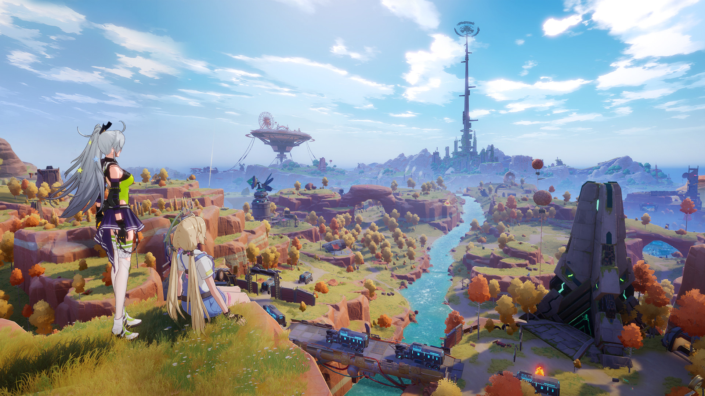

- 
The Tower of Fantasy 1.5 Artificial Island update is the first content patch since the game’s release. Not only does it include new locations, but there are a number of deadly bosses and the arrival of the Home System.
If that wasn’t enough, Wanderers will likely be able to roll for Claudia – the game’s upcoming SSR Simulacrum. So, if you wish to know everything that’s coming in the Tower of Fantasy 1.5 update, then we’ve compiled all the details in one place for you here.